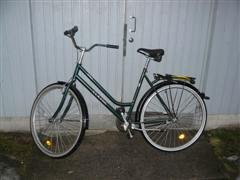

Kolo je v Oulu a možná i obecně ve Finsku naprostý fenomén. Jsou všude. Asi ne úplně všude jako v Amsterodamu, ale i tak… Kdo nevlastní kolo je nula. Nikam se nedostane, nic nezmůže, nemůže jezdit s ostatními. Všichni mají kolo a všichni jej používají. Stará škaredá kola, nová pěkná kola, s převody i bez, Shimano neShimano, Merida neMerida, jezdí staří, mladí, lidi středního, malého i nemalého věku. A samozřejmě v zimě.
Bicykl je zde tedy životní záležitostí, základní investicí. Svůj jsem koupil od zdejší kolejní cyklopřekupnické mafie, Andreie a Lorenza. Za 90 € mám kolo, kterému by se u nás všichni vysmáli (jedna brzda, zvonek, žádné převody, rám posazený dole, rok výroby pamatuje trabanty), ale tady patří mezi ten hezčí průměr. Kolo není záležitost stylu nebo společenského postavení. Řeší se jen „máš – nemáš“. Stejně jako obleční apod. Buď vám je zima, nebo není. Jestli vypadáte pěkně, to je každému v –20°C jedno.
Oulu je i ve Finsku pro cyklistiku stvořené více než je obvyklé. Celé město je pokryto širokými chodníky, cyklopěšími stezkami, … Na kole (a pěšky) se dostanete úplně všude a to velmi pěkně. Jako cyklista nikoho nikde nepřekvapíte, chodci mezi vámi umí chodit a auta s vámi počítají. Světlo byste asi mít měli, protože je tu například teď většinu dne tma, ale prakticky ho nepotřebujete, protože všechny chodníčky a stezky jsou pod lampami a to i v místech, kde byste v ČR čekali temno a lupiče za stromem.
To mě přivedlo ke dvěma myšlenkám. První je, že se ve Finsku nekrade (určitě jo, ale v jiném měřítku než u nás, nebo jak říkali Adrien a Denis, ve Francii). Pohodíte někam kolo a za tři dny je stále tam. Pověsíte si bundu s čímkoliv v kapsách někam, kde chodí 400 lidí denně a je to 2 metry od východu z budovy, ale i když tam přijdete za pět hodin, najdete ji tam přesně v původním stavu, ač tam už visí třeba i sama. Druhá myšlenka se týká toho, jak je možné, že se tady dá jezdit nejen na sněhu, ale i na ledě.
Každý den je z ulic totiž uklízen sníh. Myslím normálně rolbami, silničáři to prostě projedou a posypou kamínky. A nejen ulice! Přesně toto udělají s tak 80% všech těch 600 km cyklostezek, co tady jsou. A dělají to moc poctivě. No. Takže je tu krásný „udupaný“ a smetený (bílý!) sníh, po kterém je radost jezdit. Když je led, je posypaný. Po tom už je menší radost jezdit, ale pořád větší… než zatáčet :D . Mimochodem, ty převody nepotřebujete, Oulu je kompletně placaté a největší problémy budete mít s mostem přes železnici.
Ježdění na sněhu je geniální věc. Sníh je perfektní povrch pro kolo – když neděláte blbosti, nesmýká se, drží vaše kolo a můžete po něm jet normálně 20–30 km/h bez jakýchkoliv zábran, klidně se můžete ještě levou rukou drbat v uchu. I když to asi ne, protože ucho máte většinou pod čepicí nebo čelenkou, aby nezmrzlo. Každopádně… Jede se po sněhu stokrát lépe než po trávě a jiných terénních záležitostech a jede se po něm snad i lépe než po betonu. Když se náhodou blbě otočíte a žuchnete na zem… Tak co? Spadli jste přece do sněhu ;) .
Jiná je to ovšem s ledem. Led je sviňa. Když jeden den přes noc polovina sněhu v Oulu roztála, protože bylo kolem nuly a možná i více, ale zrána najednou vše namrzlo, nebylo ježdění na kole zrovna potěšením. Člověk odvážně vyjel a po pěti metrech ležel rozplácnutý na zemi s otlučeným zadkem. Nene, led není cyklistův kamarád. Samozřejmě, velká část Oulu je posypaná a i po zledovatělých chodnících se dá jezdit, ale člověk jen na chvíli zaváhá a omylem vjede na kousek zcela ledové plochy a je s ním ámen. Stejně tak zatáčení. Najíždění na nějaké nerovnosti na chodníku je vždy rizikové a zatáčení taky. Pokud tyto dvě věci navíc spojíte, máte zaručený pád. Někdy se na ledě ani prostě zatočit nedá. Ať to uděláte jakkoliv, spadnete. Moje skóre za cestu do města a zpět plus malá projížďka po městském cetru (tipuju 2 hodinky venku) je asi pět pádů ku jednomu jedinému „podchycenému“, kdy jsem omylem vjel na totální led, ale při pádu jsem se postavil na nohy, vyvážil to a zůstal i s kolem stát. Příjemné je, že se vám nikdo nesměje, protože je to normální :) .
Takže, dámové a pány, jestli máte za oknem sníh a na kole pneumatiky aspoň 5 cm široké se vzorkem odkoukaným od traktorů nebo podobným, nebuďte srabi a běžte to roztočit ven. Ježdění na sněhu je úžasné!
 Kindle
Kindle